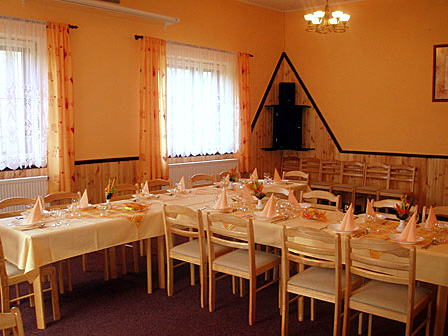
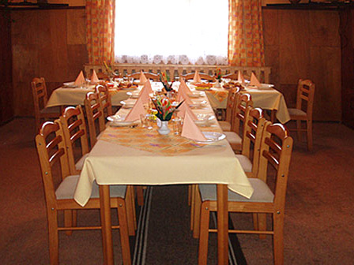
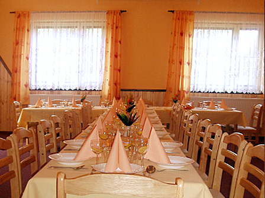
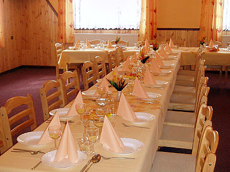

Středa 8. 7.
Gulášová polévka
- I. Bramborové knedlíky plněné uzeným masem, zelí 138 Kč
- II. Zbojnické řízky s volským okem, hranolky 142 Kč
- III. Vepřový steak „Šodek“, hranolky 145 Kč

Vratimov · Frýdecká 24
Své místo zde najdou vyznavači dobrého piva a klasické české kuchyně. Vedle hlavní místnosti a kulečníkové herny nabízíme velký společenský sál, salónek s vlastním barem a v létě i oblíbenou zahrádku se skutečnou zahradou a dětským hřištěm.
O podniku
Své místo zde najdou vyznavači dobrého piva a klasické české kuchyně. Podnik disponuje vedle hlavní místnosti a kulečníkové herny i velkým společenským sálem a prostorným salónkem s vlastním barem. V letních měsících je v provozu i tolik oblíbená zahrádka, která je ovšem i zahradou skutečnou, včetně dětského hřiště.
Sledování sportovních přenosů v hlavní místnosti.
Pořádání rodinných i firemních oslav, setkání a společenských akcí.
Denní menu v pracovních dnech a stálé TOP MENU.
Kulečníková herna, výherní automat a jukebox.
Oblíbená zahrádka se skutečnou zahradou a dětským hřištěm.
Přijímáme Sodexo, Cheque, Exit i Ticket.
Slavnostní tabule




Najdete nás
Přijímáme stravenky: